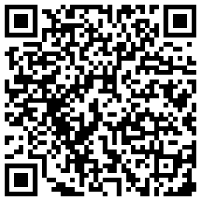

8h às 12h e das 13h às 17h, de segunda a sexta-feira.
8h às 12h e das 13h às 17h, de segunda a sexta-feira.
A Assessoria de Comunicação é o órgão de apoio e assessoramento da Reitoria da UFRB nas áreas de imprensa, publicidade e propaganda, relações públicas, internet e produção audiovisual. É responsável pela política de comunicação e coordena as atividades de divulgação dos assuntos da Universidade para a comunidade acadêmica e também para os veículos de comunicação de alcance local e nacional.
Conheça mais em ufrb.edu.br/ascom

VoltarAssessoria e suporte na organização, planejamento, execução e divulgação dos eventos realizados pela comunidade acadêmica da UFRB. As solicitações de cerimonial são atendidas de acordo com as demandas específicas de cada evento.
Solicite esse serviço em ufrb.edu.br/ascom
VoltarProdução de textos jornalísticos cujo objetivo é repercutir os fatos e eventos da UFRB. Este serviço garante a presença in loco do profissional que será responsável por transmitir o acontecimento de acordo com as técnicas jornalísticas. Abrange também a produção de fotos.
Solicite esse serviço em ufrb.edu.br/ascom
VoltarProdução de peças gráficas para a comunidade acadêmica da UFRB. Nesta etapa, ocorre o trabalho do designer de planejamento visual gráfico que baseia a criação nas informações do briefing (documento que apresenta as características e o objetivo do produto a ser elaborado) preenchido pelo solicitante.
Solicite esse serviço em ufrb.edu.br/ascom
VoltarServiço destinado a professores, pesquisadores, servidores técnico-administrativos e estudantes que desejam a divulgação de trabalhos, pesquisas, eventos e outras atividades desenvolvidas na UFRB. As informações fornecidas são disponibilizadas aos jornalistas, que as avaliam, revisam e encaminham aos veículos adequados.
Solicite esse serviço em ufrb.edu.br/ascom
VoltarProdução de conteúdo audiovisual para a comunidade acadêmica da UFRB. A ASCOM disponibiliza equipamentos e corpo técnico para a criação, captura, edição e divulgação no canal Youtube de produtos institucionais em formato audiovisual, a exemplo de spots, jingles, vinhetas, vídeos, entre outros.
Solicite esse serviço em ufrb.edu.br/ascom
VoltarSuporte técnico aos sites institucionais da UFRB desenvolvidos pela ASCOM.
Solicite esse serviço em ufrb.edu.br/ascom
VoltarTransmissão ao vivo e/ou simultânea de eventos com participação da UFRB. A transmissão ao vivo é vista por qualquer pessoa conectada em um computador, tablet ou smartphone que esteja no Portal da WebTV UFRB no Youtube. A transmissão simultânea é a transmissão, geralmente em telões, em locais próximos ao local que está acontecendo o evento. A depender do tamanho e demanda do evento, os dois serviços podem ser disponibilizados.
Solicite esse serviço em ufrb.edu.br/ascom
VoltarAgende seu atendimento através do site ufrb.edu.br/ascom
Voltar